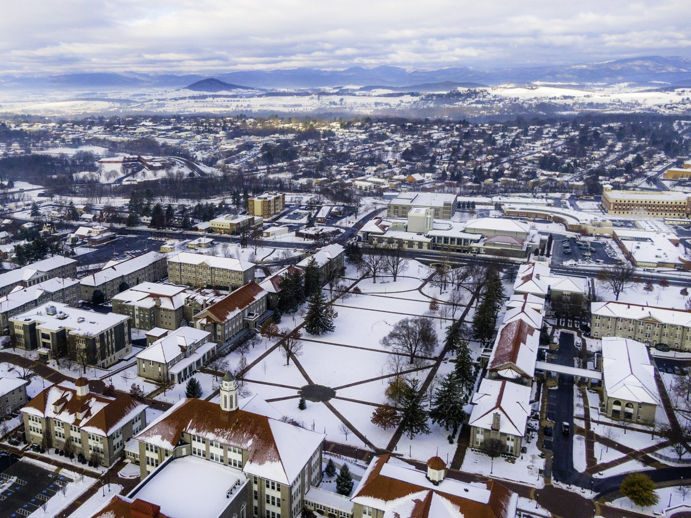
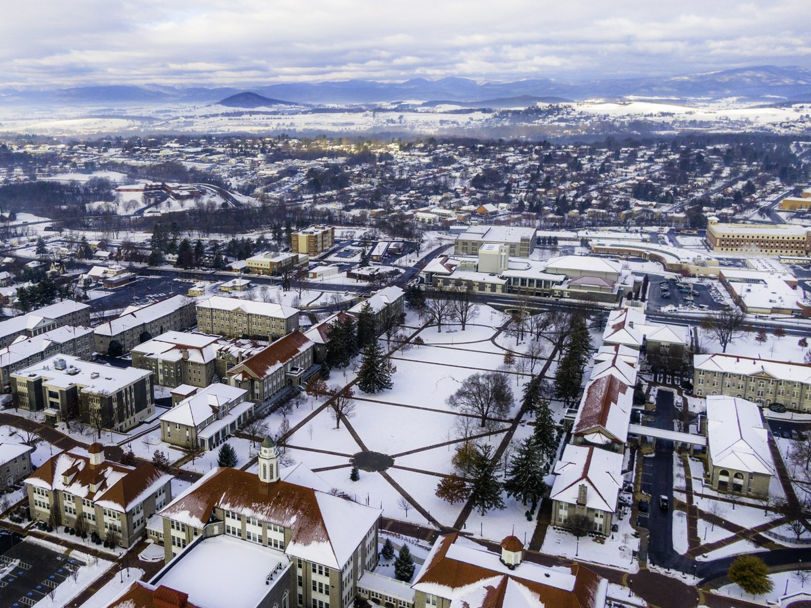
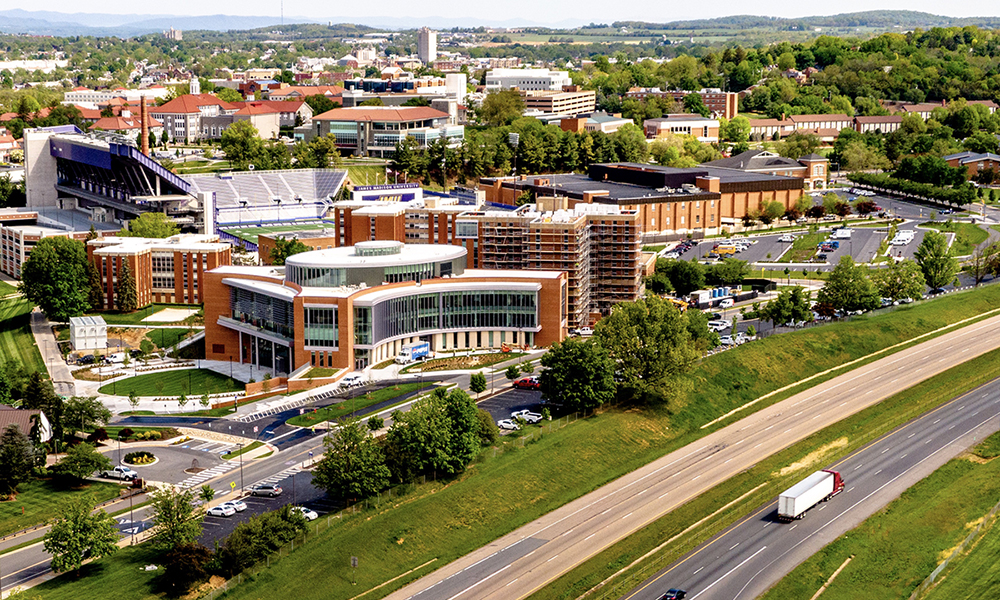
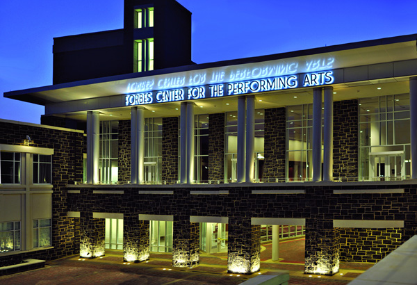
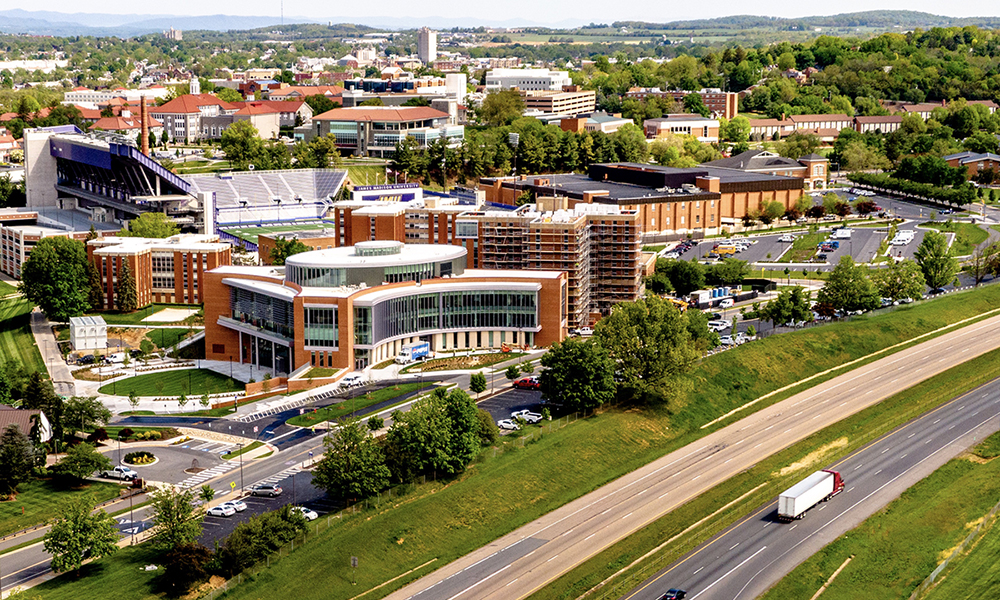
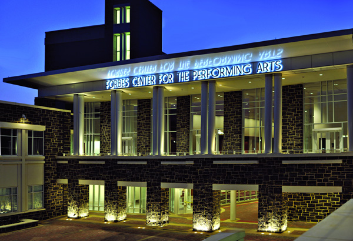
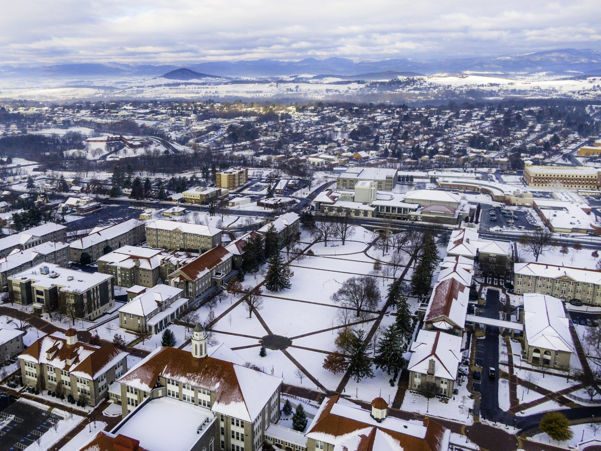
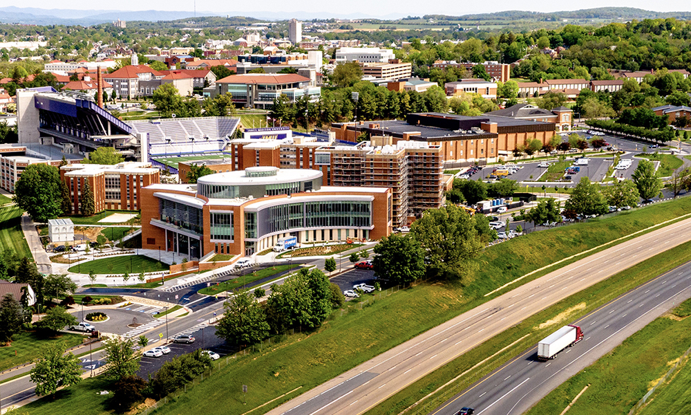
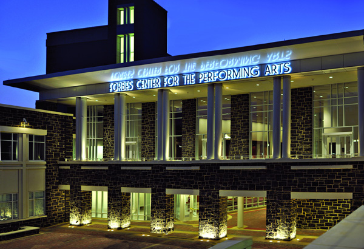

 



James Madison University was founded in 1908 and is a public university located in the center of Harrisonburg. Before being officially named James Madison University, the school was the State Normal and Industrial School for Women, State Teacher's College and Madison College. Today, JMU is home to 19,550 undergraduate students and 1,946 graduate students. There are 8 different undergraduate degree programs that encompass the 45 different majors offered at the university. There are 76 doctoral, master's and graduate programs available. James Madison also offers several professional and continuing education programs for people looking for a more untraditional approach to higher education.
There are 25 dorms exclusively for freshman students. There are several locations of the dorms including: Village, Lakeside, Bluestone, Hillside, Skyline, and Tree Houses. There are also housing options for upperclassmen students that are apartment style to accommedate students who prefer living on-campus but want something different than a dorm. There is also many off-campus complexes for upperclassmen who prefer to live in more traditional apartment settings. JMU offers amazing dining options and has been ranked in the Top 10 for college food for the past several years. There are regular dining halls as well as chain restaurants such as Chick-fil-A, Panera, Panda Express and Steak n' Shake.
JMU also offers tons of extracurricular activities to further enhance your college experience. JMU has a D1-AA athletic program with 16 sports. We have an awesome football team and women's lacrosse team that have both won several national championships. There are also club and intermeral sports teams for anyone who wants to join. There also are 12 social sororities and 19 social fraternaties associated with JMU as well as a number of business, service and degree-related fraternaties. There are numerous clubs for anything anyone is interested in and if not, you can always start your own. JMU offers work-study opportunities and a ton of other things to keep any student busy during their time here.


